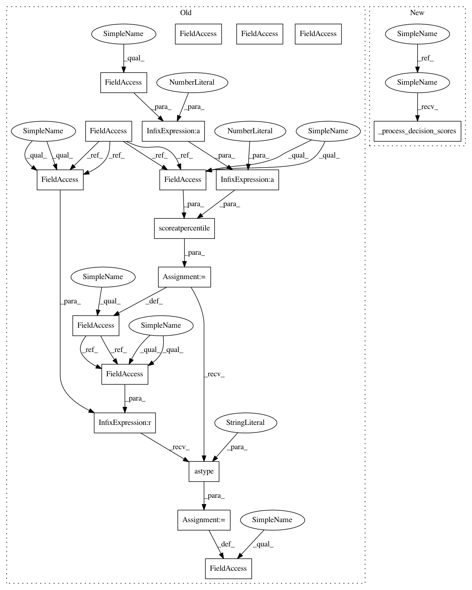

798882c255701943d530d7024d0da2db22e33cc0,pyod/models/ocsvm.py,OCSVM,fit,#OCSVM#Any#Any#Any#,46
Before Change
self.detector_.fit(X=X_train, y=y, sample_weight=sample_weight,
**params)
// invert scores. Outliers comes with higher scores
self.decision_scores = self.detector_.decision_function(X_train) * -1
self.threshold_ = scoreatpercentile(self.decision_scores,
100 * (1 - self.contamination))
self.y_pred = (self.decision_scores > self.threshold_).astype("int").ravel()
return self
def decision_function(self, X):
After Change
max_iter=self.max_iter,
random_state=self.random_state)
def fit(self, X_train, y=None, sample_weight=None, **params):
self._isfitted = True
self.detector_.fit(X=X_train, y=y, sample_weight=sample_weight,
**params)
// invert decision_scores. Outliers comes with higher decision_scores
self.decision_scores = self.detector_.decision_function(X_train) * -1
self._process_decision_scores()
return self
def decision_function(self, X):
if not self._isfitted:
In pattern: SUPERPATTERN
Frequency: 4
Non-data size: 18
Instances
Project Name: yzhao062/pyod
Commit Name: 798882c255701943d530d7024d0da2db22e33cc0
Time: 2018-05-28
Author: yuezhao@cs.toronto.edu
File Name: pyod/models/ocsvm.py
Class Name: OCSVM
Method Name: fit
Project Name: yzhao062/pyod
Commit Name: 798882c255701943d530d7024d0da2db22e33cc0
Time: 2018-05-28
Author: yuezhao@cs.toronto.edu
File Name: pyod/models/abod.py
Class Name: ABOD
Method Name: fit
Project Name: yzhao062/pyod
Commit Name: 798882c255701943d530d7024d0da2db22e33cc0
Time: 2018-05-28
Author: yuezhao@cs.toronto.edu
File Name: pyod/models/iforest.py
Class Name: IForest
Method Name: fit
Project Name: yzhao062/pyod
Commit Name: 798882c255701943d530d7024d0da2db22e33cc0
Time: 2018-05-28
Author: yuezhao@cs.toronto.edu
File Name: pyod/models/ocsvm.py
Class Name: OCSVM
Method Name: fit
Project Name: yzhao062/pyod
Commit Name: 798882c255701943d530d7024d0da2db22e33cc0
Time: 2018-05-28
Author: yuezhao@cs.toronto.edu
File Name: pyod/models/lof.py
Class Name: LOF
Method Name: fit